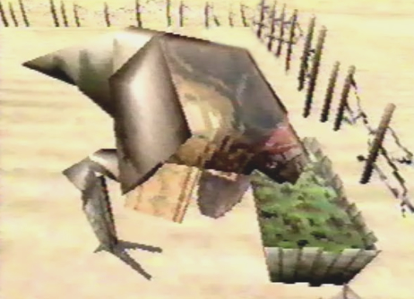

Coolia  |
Info I first encountered a Coolia back at the Valley when I saved Gash, but not this close and personal! I found him at the back of the caravan minding his own business eating Junio Seeds, not a good food for a Coolia. He was quite domesticated. Coolias pulled carts whenever the caravan had to travel. I think he was scared of me, because he stopped eating and seemed disturbed. It was later on, that he finally warmed up to me and wasn't so apprehensive. |